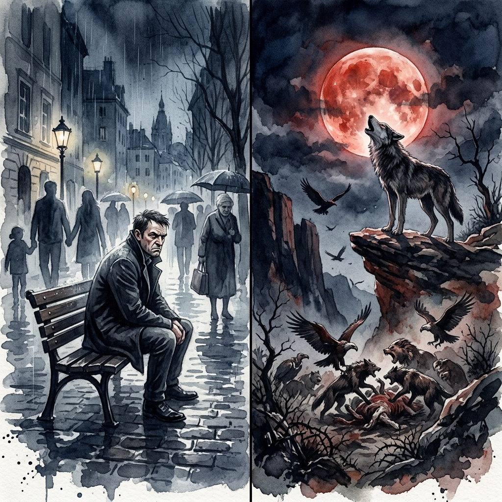
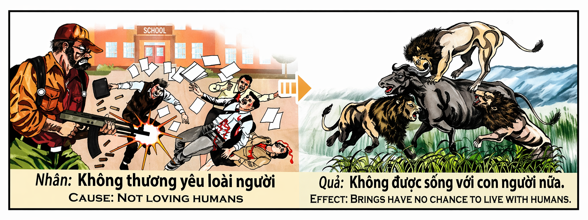

El Exilio de la EspecieThe Exile from the SpeciesL'Esilio dalla Specie物种的放逐النفي من الجنس البشريИзгнание из родаDie Verbannung aus der ArtL'Exil de l'Espèce種からの追放O Exílio da EspécieLưu Đày Khỏi Loài Người
Quien desprecia a la humanidad — quien mira a sus semejantes no con compasión sino con odio, quien daña donde podría amar, quien destruye donde podría construir — está firmando con su propia mano el contrato más terrible que el karma puede redactar: la pérdida del derecho a ser humano. Porque la forma humana no es un accidente, sino un privilegio ganado a través de incontables vidas. Y quien usa ese privilegio para causar dolor a otros seres humanos demuestra que no merece el vehículo que habita. Whoever despises humanity — who looks upon their fellow beings not with compassion but with hatred, who harms where they could love, who destroys where they could build — is signing with their own hand the most terrible contract karma can draft: the loss of the right to be human. For the human form is not an accident but a privilege earned across countless lives. And whoever uses that privilege to cause pain to other human beings proves they do not deserve the vessel they inhabit. Chi disprezza l'umanità — chi guarda i propri simili non con compassione ma con odio, chi danneggia dove potrebbe amare — sta firmando con la propria mano il contratto più terribile che il karma possa redigere: la perdita del diritto di essere umano. Perché la forma umana non è un caso, ma un privilegio guadagnato attraverso innumerevoli vite. 蔑视人类的人——对同类不怀慈悲而怀仇恨的人，在能爱之处伤害、在能建设之处毁灭的人——正在亲手签下业力所能起草的最可怕的契约：丧失做人的权利。因为人身不是偶然，而是无数世累积的特权。谁用这个特权来伤害他人，就证明了他不配拥有他所栖居的这副躯壳。 من يحتقر البشرية — من ينظر إلى أخيه الإنسان لا بالرحمة بل بالكراهية، من يؤذي حيث يمكنه أن يحب — يوقّع بيده أفظع عقد يمكن للكارما أن تكتبه: فقدان حق أن يكون إنساناً. لأن الشكل البشري ليس صدفة بل امتياز اكتُسب عبر حيوات لا تُحصى. Кто презирает человечество — кто смотрит на себе подобных не с состраданием, а с ненавистью, кто вредит там, где мог бы любить — подписывает собственной рукой самый страшный договор, который карма может составить: утрату права быть человеком. Ибо человеческое тело — не случайность, а привилегия, заслуженная за бессчётные жизни. Wer die Menschheit verachtet — wer seine Mitmenschen nicht mit Mitgefühl, sondern mit Hass ansieht, wer schadet, wo er lieben könnte — unterschreibt eigenhändig den schrecklichsten Vertrag, den das Karma aufsetzen kann: den Verlust des Rechts, ein Mensch zu sein. Denn die menschliche Gestalt ist kein Zufall, sondern ein über unzählige Leben verdientes Privileg. Celui qui méprise l'humanité — qui regarde ses semblables non avec compassion mais avec haine, qui blesse là où il pourrait aimer — signe de sa propre main le contrat le plus terrible que le karma puisse rédiger : la perte du droit d'être humain. Car la forme humaine n'est pas un hasard, mais un privilège gagné à travers d'innombrables vies. 人類を蔑む者——同胞を慈悲ではなく憎しみをもって見る者、愛せるところで傷つけ、築けるところで壊す者——は、自らの手でカルマが起草し得る最も恐ろしい契約に署名しています：人間である権利の喪失です。人間の姿は偶然ではなく、数え切れない生を通じて獲得された特権だからです。 Quem despreza a humanidade — quem olha para os seus semelhantes não com compaixão mas com ódio, quem fere onde poderia amar — está a assinar com a própria mão o contrato mais terrível que o karma pode redigir: a perda do direito de ser humano. Porque a forma humana não é um acidente, mas um privilégio ganho ao longo de incontáveis vidas. Kẻ khinh miệt nhân loại — kẻ nhìn đồng loại không bằng lòng thương mà bằng hận thù, kẻ hại nơi có thể yêu, kẻ phá nơi có thể xây — đang tự tay ký vào bản giao kèo kinh khủng nhất mà nhân quả có thể soạn: mất quyền làm người. Bởi thân người không phải ngẫu nhiên, mà là đặc ân tích luỹ qua vô số kiếp.
En la cosmología del karma, la forma humana es el carruaje más alto que el alma puede conducir en esta dimensión. Nacer humano significa haber acumulado suficiente mérito — a lo largo de cientos, quizá miles de existencias previas — como para recibir el único cuerpo que posee conciencia moral, capacidad de reflexión, libre albedrío y la facultad de amar deliberadamente. Cada ser humano que camina sobre esta tierra porta, sin saberlo, una corona invisible: la corona de la especie. Y esa corona no es permanente. Es un préstamo.
Cuando un ser humano elige no amar a sus congéneres — y más aún, cuando elige activamente dañarlos, herirlos, aniquilarlos — está diciendo al universo, con cada acto de crueldad: "No necesito esta forma. No la valoro. No la merezco." Y el universo, que escucha con una paciencia infinita pero que también tiene un contable implacable, toma nota. La próxima vez que esa alma busque un cuerpo, no encontrará uno humano. Encontrará garras en vez de manos. Encontrará colmillos en vez de labios para besar. Encontrará un instinto ciego en vez de la conciencia luminosa que desperdició. Renacerá como bestia: un animal salvaje que pelea por sobras en una llanura polvorienta, que vive sin la capacidad de reflexión, sin amor, sin lenguaje, sin la posibilidad de pedir perdón. Porque eso es lo que el karma devuelve a quien rechaza la humanidad: exactamente lo que pidió — un mundo sin ella.
In karma's cosmology, the human form is the highest carriage the soul can drive in this dimension. To be born human means having accumulated enough merit — across hundreds, perhaps thousands of prior existences — to receive the only body that possesses moral consciousness, capacity for reflection, free will, and the faculty to love deliberately. Every human being who walks this earth carries, unknowingly, an invisible crown: the crown of the species. And that crown is not permanent. It is a loan.
When a human being chooses not to love their kind — and worse still, actively chooses to harm, wound, annihilate them — they are telling the universe with every act of cruelty: "I don't need this form. I don't value it. I don't deserve it." And the universe, which listens with infinite patience but also keeps an implacable ledger, takes note. The next time that soul seeks a body, it will not find a human one. It will find claws instead of hands. Fangs instead of lips for kissing. Blind instinct instead of the luminous consciousness it wasted. It will be reborn as a beast: a wild animal fighting for scraps on dusty plains, living without the capacity for reflection, without love, without language, without the possibility of asking forgiveness. Because that is what karma returns to whoever rejects humanity: exactly what they asked for — a world without it.
Nella cosmologia del karma, la forma umana è il veicolo più alto che l'anima può guidare in questa dimensione. Nascere umani significa aver accumulato sufficiente merito per ricevere l'unico corpo che possiede coscienza morale, capacità di riflessione, libero arbitrio e la facoltà di amare deliberatamente. Ogni essere umano porta una corona invisibile: quella della specie. E quella corona non è permanente. È un prestito.
Quando un essere umano sceglie di non amare i propri simili — e, peggio ancora, sceglie attivamente di danneggiarli — dice all'universo: "Non ho bisogno di questa forma. Non la merito." E l'universo prende nota. La prossima volta quell'anima troverà artigli al posto di mani, zanne al posto di labbra. Rinascerà bestia: un animale selvaggio che lotta per gli avanzi, senza riflessione, senza amore, senza linguaggio. Perché il karma restituisce a chi rifiuta l'umanità esattamente ciò che ha chiesto: un mondo senza di essa.
在业力的宇宙观中，人身是灵魂在此维度能驾驭的最高载具。生而为人意味着经历了数百甚至数千次往世的功德积累，才得以获得唯一拥有道德意识、反省能力、自由意志和有意识去爱的能力的身体。每一个行走在大地上的人都戴着一顶隐形的王冠：物种的王冠。但那顶王冠不是永久的。它是借来的。
当一个人选择不爱同类——更甚者，主动选择伤害他们——他就是在用每一个残忍的行为告诉宇宙："我不需要这副人身。我不珍惜它。我不配拥有它。"而宇宙——以无限的耐心倾听，但也拥有不可动摇的账簿——会记下来。下一次那个灵魂寻找身体时，它将找不到人身。它会发现爪子代替了双手，獠牙代替了亲吻的嘴唇，盲目的本能代替了被浪费的光明意识。它将转世为野兽：在尘土飞扬的荒原上为残羹争斗的野兽，没有反省的能力，没有爱，没有语言，没有请求宽恕的可能。因为这就是业力对拒绝人性的人的回报：正是他所要求的——一个没有人性的世界。
في علم الكارما الكوني، الشكل البشري هو أعلى مركبة يمكن للروح أن تقودها في هذا البُعد. أن تُولد إنساناً يعني أنك جمعت ما يكفي من الفضل عبر مئات بل آلاف الحيوات السابقة لتتلقى الجسد الوحيد الذي يمتلك وعياً أخلاقياً وقدرة على التأمل وإرادة حرة وملكة الحب الواعي. كل إنسان يحمل تاجاً خفياً: تاج الجنس البشري. وذلك التاج ليس دائماً. إنه قرض.
حين يختار الإنسان ألا يحب بني جنسه — بل والأسوأ أن يختار إيذاءهم — فإنه يقول للكون بكل فعل قسوة: "لا أحتاج هذا الشكل. لا أستحقه." والكون يسجّل. في المرة القادمة ستجد تلك الروح مخالب بدل أيدٍ وأنياباً بدل شفاه. ستُبعث وحشاً يقاتل على الفتات في سهول مغبرّة بلا تأمل ولا حب ولا لغة. لأن الكارما تُعيد لمن يرفض الإنسانية بالضبط ما طلبه: عالماً بدونها.
В космологии кармы человеческое тело — высшая колесница, которую душа может вести в этом измерении. Родиться человеком означает накопить достаточно заслуг за сотни, может быть, тысячи прежних жизней, чтобы получить единственное тело, обладающее нравственным сознанием, способностью к рефлексии, свободой воли и даром осознанной любви. Каждый человек носит невидимую корону — корону вида. И эта корона не вечна. Она дана взаймы.
Когда человек выбирает не любить себе подобных — а тем более сознательно причинять им боль — он говорит вселенной каждым актом жестокости: «Мне не нужна эта форма. Я её не ценю. Я её не заслуживаю.» И вселенная, которая слушает с бесконечным терпением, но ведёт неумолимый учёт, запоминает. В следующий раз эта душа найдёт когти вместо рук, клыки вместо губ, слепой инстинкт вместо сознания. Она переродится зверем: диким животным, дерущимся за объедки на пыльной равнине, без рефлексии, без любви, без языка. Потому что карма возвращает отвергнувшему человечность ровно то, что он просил: мир без неё.
In der Kosmologie des Karmas ist die menschliche Gestalt die höchste Kutsche, die die Seele in dieser Dimension lenken kann. Als Mensch geboren zu werden bedeutet, genug Verdienst angesammelt zu haben, um den einzigen Körper zu erhalten, der moralisches Bewusstsein, Reflexionsfähigkeit, freien Willen und die Fähigkeit zur bewussten Liebe besitzt. Jeder Mensch trägt eine unsichtbare Krone: die Krone der Spezies. Und diese Krone ist nicht dauerhaft. Sie ist eine Leihgabe.
Wenn ein Mensch sich entscheidet, seine Mitmenschen nicht zu lieben — und schlimmer noch, ihnen aktiv zu schaden — sagt er dem Universum mit jeder Tat der Grausamkeit: „Ich brauche diese Gestalt nicht. Ich verdiene sie nicht." Und das Universum notiert. Beim nächsten Mal wird diese Seele Krallen statt Hände finden, Reißzähne statt Lippen, blinden Instinkt statt Bewusstsein. Sie wird als Bestie wiedergeboren: ein wildes Tier, das um Reste auf staubigen Ebenen kämpft, ohne Reflexion, ohne Liebe, ohne Sprache. Denn das Karma gibt dem, der die Menschlichkeit ablehnt, genau das zurück, worum er gebeten hat: eine Welt ohne sie.
Dans la cosmologie du karma, la forme humaine est l'attelage le plus élevé que l'âme puisse conduire dans cette dimension. Naître humain signifie avoir accumulé assez de mérite pour recevoir le seul corps possédant une conscience morale, une capacité de réflexion, un libre arbitre et la faculté d'aimer délibérément. Chaque être humain porte une couronne invisible : celle de l'espèce. Et cette couronne n'est pas permanente. C'est un prêt.
Quand un être humain choisit de ne pas aimer ses semblables — et pire encore, de leur nuire activement — il dit à l'univers par chaque acte de cruauté : « Je n'ai pas besoin de cette forme. Je ne la mérite pas. » Et l'univers prend note. La prochaine fois, cette âme trouvera des griffes au lieu de mains, des crocs au lieu de lèvres, un instinct aveugle au lieu de la conscience lumineuse. Elle renaîtra bête : un animal sauvage se battant pour des restes dans des plaines poussiéreuses, sans réflexion, sans amour, sans langage. Car le karma rend à qui rejette l'humanité exactement ce qu'il a demandé : un monde sans elle.
カルマの宇宙論において、人間の姿は魂がこの次元で操れる最も高い乗り物です。人間として生まれるということは、道德的意識、内省能力、自由意志、そして意図的に愛する力を備えた唯一の体を受け取るに足る功徳を、数百、おそらく数千の前世にわたって積み重ねてきたことを意味します。この地上を歩く全ての人間は、知らずに見えない王冠をかぶっています：種の王冠です。しかしその王冠は永久ではありません。借り物です。
人間が同胞を愛さないことを選ぶとき——さらに悪いことに、積極的に傷つけることを選ぶとき——残酷な行為のたびに宇宙にこう告げているのです：「この姿は要らない。これに値しない。」そして宇宙は記録します。次にその魂が体を求めるとき、人間の体は見つかりません。手の代わりに爪、唇の代わりに牙、輝く意識の代わりに盲目の本能を見つけるでしょう。獣として生まれ変わります：埃まみれの平原で残飯を争う野獣として、内省なく、愛なく、言葉なく、許しを請う可能性もなく。なぜなら、人間性を拒絶した者にカルマが返すのは、まさにその者が求めたもの——人間性のない世界——だからです。
Na cosmologia do karma, a forma humana é a carruagem mais alta que a alma pode conduzir nesta dimensão. Nascer humano significa ter acumulado mérito suficiente para receber o único corpo que possui consciência moral, capacidade de reflexão, livre-arbítrio e a faculdade de amar deliberadamente. Cada ser humano carrega uma coroa invisível: a coroa da espécie. E essa coroa não é permanente. É um empréstimo.
Quando um ser humano escolhe não amar os seus semelhantes — e pior ainda, escolhe ativamente magoá-los — diz ao universo com cada ato de crueldade: "Não preciso desta forma. Não a mereço." E o universo toma nota. Na próxima vez, essa alma encontrará garras em vez de mãos, presas em vez de lábios, instinto cego em vez de consciência. Renascerá como besta: um animal selvagem lutando por restos em planícies poeirentas, sem reflexão, sem amor, sem linguagem. Porque o karma devolve a quem rejeita a humanidade exatamente o que pediu: um mundo sem ela.
Trong vũ trụ quan nhân quả, thân người là cỗ xe cao nhất mà linh hồn có thể lái trong chiều không gian này. Sinh ra làm người nghĩa là đã tích lũy đủ công đức qua hàng trăm, có khi hàng ngàn kiếp trước, để nhận được thân xác duy nhất có ý thức đạo đức, khả năng suy tư, tự do ý chí và năng lực yêu thương có chủ đích. Mỗi con người mang trên đầu vương miện vô hình: vương miện của loài. Và vương miện ấy không vĩnh viễn. Nó là đồ mượn.
Khi một con người chọn không yêu thương đồng loại — tệ hơn nữa, chọn chủ động hãm hại họ — kẻ ấy đang nói với vũ trụ qua mỗi hành động tàn nhẫn: "Tôi không cần thân người này. Tôi không xứng đáng." Và vũ trụ ghi nhận. Lần tới linh hồn đó sẽ tìm thấy vuốt thay vì bàn tay, nanh thay vì môi, bản năng mù quáng thay vì ý thức sáng suốt. Nó sẽ tái sinh làm thú hoang: con vật hoang dã tranh giành thức ăn thừa trên đồng bụi, không suy tư, không yêu thương, không ngôn ngữ. Bởi nhân quả trả cho kẻ chối bỏ nhân tính đúng điều hắn yêu cầu: một thế giới không có nó.
La Corona Prestada
The Borrowed Crown
La Corona Prestata
借来的王冠
التاج المُعار
Одолженная корона
Die Geliehene Krone
La Couronne Empruntée
借り物の王冠
A Coroa Emprestada
Vương Miện Mượn
En una provincia montañosa de Vietnam vivieron, en tiempos distintos, dos hombres que compartían el mismo nombre: Hùng. El primero — al que el pueblo llamaba Hùng Viejo — nació en un caserío de campesinos pobres. El segundo — Hùng Joven — nació una generación después en la misma aldea, en la misma casa, junto al mismo río. Pero solo sus nombres se parecían.
Hùng Viejo creció con rabia. De niño pegaba a los perros, de adolescente robaba a los ancianos y, de adulto, se convirtió en el hombre que nadie quería ver llegar. Se peleaba con todo el mundo. Escupía a los vecinos. Si un extranjero se perdía en su camino y pedía agua, él le cerraba la puerta en la cara. "La gente no vale nada", repetía. "Son cucarachas con zapatos." Y con los años, su desprecio se fue condensando como veneno en el fondo de un pozo. Hasta que un día, borracho de odio, golpeó sin motivo a un joven que pasaba por su calle. Lo golpeó tan fuerte que el muchacho quedó tendido en el barro. Los vecinos, que ya no podían más, lo denunciaron. Hùng Viejo se escondió en la montaña y vivió solo, como una bestia, alimentándose de lo que encontraba, gruñendo a cualquier sombra humana que se acercase. Murió solo, acurrucado en una cueva, con los puños aún cerrados.
Dicen los ancianos de la aldea que, tras la muerte de Hùng Viejo, comenzaron a escucharse por las noches los aullidos de un lobo solitario en las montañas. Un lobo que nadie había visto antes. Un lobo que no cazaba en manada, que no compartía presa, que atacaba incluso a los de su propia especie. Los campesinos lo llamaron "el lobo amargo" porque gruñía con una furia que no parecía animal, sino humana. Y una vieja curandera del pueblo, sentada junto al fuego, dijo algo que nadie olvidó: "Ese no es un lobo nuevo. Ese es Hùng, que pidió al cielo no vivir entre personas y el cielo le concedió su deseo — pero no como él imaginaba."
Una generación más tarde, en la misma casa, nació Hùng Joven. Y Hùng Joven era diferente. De niño cuidaba a los más pequeños. De adolescente ayudaba a los ancianos a cruzar el arroyo. De adulto se casó con una mujer bondadosa y abrió un pequeño taller de carpintería donde reparaba gratis las puertas de quien no podía pagar. Si un extranjero se perdía y pedía agua, Hùng Joven no solo le daba agua: le preparaba un plato de arroz, le ofrecía un lugar para dormir, y al día siguiente lo acompañaba hasta el camino principal. "Las personas son lo más valioso que existe", decía. "Porque solo las personas pueden elegir amar."
Hùng Joven murió anciano, rodeado de hijos, nietos y vecinos que lloraban no por obligación sino porque habían perdido al mejor hombre que conocían. Y dicen los ancianos que la noche después de su funeral, el lobo amargo dejó de aullar. Que las montañas quedaron en silencio por primera vez en una generación. Algunos dicen que el alma de Hùng Viejo, que vagaba prisionera en la forma de lobo, vio cómo el alma de Hùng Joven — que había honrado la corona de ser humano cada día de su vida — ascendía limpia hacia la luz. Y que entonces el lobo comprendió lo que la curandera había dicho: que la forma humana no es un derecho, sino una corona prestada. Que quien la usa para odiar, la pierde. Y que quien la usa para amar, la hace eterna.
In a mountainous province of Vietnam there lived, at different times, two men who shared the same name: Hùng. The first — whom the village called Old Hùng — was born in a hamlet of poor farmers. The second — Young Hùng — was born a generation later in the same village, in the same house, beside the same river. But only their names were alike.
Old Hùng grew up with rage. As a child he beat the dogs; as a teenager he stole from the elderly; as an adult he became the man no one wanted to see coming. He fought with everyone. He spat at neighbors. If a stranger lost their way and asked for water, he slammed the door in their face. "People are worthless," he repeated. "Cockroaches in shoes." Over the years his contempt condensed like poison at the bottom of a well. Until one day, drunk on hatred, he struck without cause a young man passing through his street. He struck so hard the youth lay in the mud. The neighbors, who could bear no more, reported him. Old Hùng hid in the mountains and lived alone, like a beast, feeding on whatever he found, snarling at any human shadow that approached. He died alone, curled in a cave, fists still clenched.
The village elders say that after Old Hùng's death, the howls of a solitary wolf began echoing through the mountains at night. A wolf no one had seen before. A wolf that didn't hunt in packs, didn't share prey, that attacked even its own kind. The farmers called it "the bitter wolf" because it snarled with a fury that seemed not animal, but human. And an old healer of the village, seated by the fire, said something no one forgot: "That is no new wolf. That is Hùng, who asked heaven not to live among people, and heaven granted his wish — but not as he imagined."
A generation later, in the same house, Young Hùng was born. And Young Hùng was different. As a child he looked after the little ones. As a teenager he helped the elderly cross the stream. As an adult he married a kind woman and opened a small carpentry workshop where he repaired for free the doors of those who couldn't pay. If a stranger got lost and asked for water, Young Hùng didn't just give water: he prepared a plate of rice, offered a place to sleep, and the next day walked them to the main road. "People are the most valuable thing that exists," he would say. "Because only people can choose to love."
Young Hùng died old, surrounded by children, grandchildren, and neighbors who wept not from obligation but because they had lost the best man they knew. And the elders say that the night after his funeral, the bitter wolf stopped howling. The mountains fell silent for the first time in a generation. Some say Old Hùng's soul, wandering imprisoned in wolf form, saw how Young Hùng's soul — which had honored the crown of being human every day of his life — rose clean toward the light. And that the wolf then understood what the healer had said: that the human form is not a right, but a borrowed crown. That whoever uses it to hate, loses it. And whoever uses it to love, makes it eternal.
In una provincia montuosa del Vietnam vissero, in epoche diverse, due uomini con lo stesso nome: Hùng. Il primo — che il villaggio chiamava Hùng il Vecchio — nacque in un casolare di contadini poveri. Il secondo — Hùng il Giovane — nacque una generazione dopo nello stesso villaggio, nella stessa casa, accanto allo stesso fiume. Ma solo i nomi si somigliavano.
Hùng il Vecchio crebbe con la rabbia. Da bambino picchiava i cani; da adolescente rubava agli anziani; da adulto divenne l'uomo che nessuno voleva vedere arrivare. Litigava con tutti. Se uno straniero smarrito chiedeva acqua, lui sbatteva la porta in faccia. "La gente non vale niente", ripeteva. "Scarafaggi con le scarpe." Col tempo il suo disprezzo si condensò come veleno sul fondo di un pozzo. Finché un giorno, ubriaco d'odio, colpì senza motivo un ragazzo. I vicini lo denunciarono. Hùng si rifugiò in montagna e visse solo come una bestia. Morì solo, rannicchiato in una grotta, con i pugni ancora chiusi.
Raccontano gli anziani che, dopo la morte di Hùng il Vecchio, cominciarono a udirsi di notte gli ululati di un lupo solitario in montagna — un lupo che nessuno aveva mai visto, che non cacciava in branco, che attaccava persino i suoi simili. Lo chiamarono "il lupo amaro" perché ringhiava con una furia che non sembrava animale, ma umana. E una vecchia guaritrice disse: "Quello non è un lupo nuovo. È Hùng, che chiese al cielo di non vivere tra le persone. E il cielo ha esaudito il suo desiderio — ma non come immaginava."
Una generazione dopo, nella stessa casa, nacque Hùng il Giovane. Era diverso. Da piccolo si prendeva cura degli altri bambini. Da adulto sposò una donna gentile e aprì una falegnameria dove riparava gratis le porte di chi non poteva pagare. Se uno straniero chiedeva acqua, Hùng il Giovane non gli dava solo acqua: gli preparava un piatto di riso, gli offriva un letto e il giorno dopo lo accompagnava alla strada principale. "Le persone sono la cosa più preziosa che esista", diceva. "Perché solo le persone possono scegliere di amare."
Hùng il Giovane morì vecchio, circondato da figli, nipoti e vicini che piangevano perché avevano perso l'uomo migliore che conoscessero. E raccontano che la notte dopo il funerale, il lupo amaro smise di ululare. Le montagne tacquero per la prima volta in una generazione. Alcuni dicono che l'anima di Hùng il Vecchio, prigioniera nella forma di lupo, vide l'anima di Hùng il Giovane — che aveva onorato ogni giorno la corona dell'essere umano — salire limpida verso la luce. E che allora il lupo comprese: la forma umana non è un diritto, ma una corona prestata. Chi la usa per odiare, la perde. Chi la usa per amare, la rende eterna.
在越南一个多山的省份，先后生活过两个同名的人：雄。第一个——村民称他为老雄——出生在一个贫困农民的小村落里。第二个——小雄——一代人之后出生在同一个村庄、同一栋房子、同一条河旁。但他们只有名字相似。
老雄在愤怒中长大。小时候他打狗，少年时偷老人的东西，成年后他成了谁都不想看到的人。他和所有人吵架，朝邻居吐口水。如果有陌生人迷路来讨水喝，他会砰地关上门。"人一文不值，"他常说。"不过是穿着鞋的蟑螂。"多年来，他的蔑视像井底的毒药一样凝聚。直到有一天，他醉于仇恨，无缘无故殴打了一个路过的年轻人。邻居们再也忍不了，举报了他。老雄逃进山里，像野兽一样独自生活，对靠近的任何人影咆哮。他孤独地死在一个山洞里，拳头仍然紧握。
村里老人说，老雄死后，夜里山中开始传来一只孤狼的嚎叫——一只从未见过的狼，不群猎，不分食，甚至攻击同类。农民们叫它"苦狼"，因为它的咆哮带着一种不像动物、而像人的怒火。一位老药婆坐在火边说了一句无人忘记的话："那不是一只新狼。那是老雄，他请求上天不要和人住在一起，上天答应了他的愿望——但不是他想象的方式。"
一代人之后，在同一栋房子里，小雄出生了。小雄不一样。小时候他照顾更小的孩子，少年时帮老人过溪，成年后娶了一个善良的妻子，开了一间小木工坊，免费修理付不起钱的人家的门。如果有陌生人迷路来讨水，小雄不只给水：他会做一盘米饭，给一个睡觉的地方，第二天送客人到大路上。"人是世上最宝贵的东西，"他说。"因为只有人能选择去爱。"
小雄年老而终，身边围着儿女、孙辈和邻居——他们哭泣不是出于义务，而是因为失去了认识的最好的人。老人们说，他葬礼的那天夜里，苦狼停止了嚎叫。群山一代以来第一次沉寂。有人说老雄的灵魂——困在狼的躯壳中徘徊——看到了小雄的灵魂——一个生命中每一天都珍视人的王冠的灵魂——纯净地升向光明。而那时狼明白了药婆说过的话：人身不是权利，而是借来的王冠。用它来仇恨的人，失去它。用它来爱的人，使它永恒。
في مقاطعة جبلية من فيتنام عاش في حقبتين مختلفتين رجلان يحملان نفس الاسم: هونغ. الأول — الذي سمّاه القرويون هونغ العجوز — وُلد في قرية فلاحين فقراء. الثاني — هونغ الشاب — وُلد بعد جيل في نفس القرية والبيت وبجوار نفس النهر. لكنهما لم يتشابها إلا في الاسم.
كبر هونغ العجوز مع الغضب. صغيراً كان يضرب الكلاب، مراهقاً يسرق المسنين، بالغاً أصبح الرجل الذي لا يريد أحد رؤيته قادماً. كان يتشاجر مع الجميع. إذا تاه غريب وطلب ماء أغلق الباب في وجهه. "الناس لا قيمة لهم"، كان يردد. "صراصير بأحذية." ومع السنين تكاثف احتقاره كسمّ في قاع بئر. حتى ضرب يوماً شاباً بلا سبب. أبلغ الجيران عنه ففرّ إلى الجبل وعاش وحيداً كوحش. مات وحيداً في كهف وقبضتاه ما زالتا مغلقتين.
يقول شيوخ القرية إن بعد موته بدأت تُسمع ليلاً في الجبال عواء ذئب وحيد لم يره أحد من قبل — ذئب لا يصطاد جماعياً ولا يشارك فريسته بل يهاجم حتى بني جنسه. سمّاه الفلاحون "الذئب المُرّ" لأن هديره كان يحمل غضباً لا يبدو حيوانياً بل بشرياً. وقالت عجوز مُداوية جالسة بجوار النار كلمة لم ينسها أحد: "ذاك ليس ذئباً جديداً. ذاك هونغ الذي سأل السماء ألا يعيش بين الناس فاستجابت — لكن ليس كما تخيّل."
بعد جيل وُلد في نفس البيت هونغ الشاب. وكان مختلفاً. صغيراً يرعى الأطفال، مراهقاً يساعد المسنين في عبور الجدول، بالغاً تزوج امرأة طيبة وفتح ورشة نجارة يُصلح فيها أبواب من لا يقدر على الدفع مجاناً. إذا تاه غريب وطلب ماء لم يكتفِ بإعطائه الماء بل أعدّ له طبق أرز ومكاناً للنوم ورافقه صباحاً إلى الطريق الرئيسي. "الناس أثمن ما في الوجود"، كان يقول. "لأنهم وحدهم من يستطيعون اختيار الحب."
مات هونغ الشاب شيخاً محاطاً بأبنائه وأحفاده وجيرانه الذين بكوا لا واجباً بل لأنهم فقدوا أفضل رجل عرفوه. ويقول الشيوخ إن ليلة جنازته توقف الذئب المُرّ عن العواء. صمتت الجبال لأول مرة منذ جيل. يقول بعضهم إن روح هونغ العجوز السجينة في جسد الذئب رأت روح هونغ الشاب — التي أكرمت تاج الإنسانية كل يوم — تصعد نقية نحو النور. وعندها فهم الذئب ما قالته المُداوية: الشكل البشري ليس حقاً بل تاج مُعار. من يستخدمه للكراهية يفقده. ومن يستخدمه للحب يجعله أبدياً.
В горной провинции Вьетнама жили, в разные эпохи, два человека с одним именем: Хунг. Первого — которого деревня звала Старый Хунг — родили в хуторе бедных крестьян. Второй — Молодой Хунг — появился на свет поколением позже в той же деревне, в том же доме, у той же реки. Но похожи у них были только имена.
Старый Хунг вырос в ярости. Ребёнком бил собак, подростком обкрадывал стариков, взрослым стал человеком, которого никто не хотел видеть. Он ругался со всеми. Если путник просил воды, захлопывал дверь. «Люди — ничто, — повторял он. — Тараканы в обуви.» Годами его презрение сгущалось, как яд на дне колодца. Однажды он избил ни за что прохожего юношу. Соседи донесли. Хунг бежал в горы и жил один, как зверь. Умер в пещере, скрючившись, со сжатыми кулаками.
Старожилы рассказывают, что после его смерти в горах по ночам стал выть одинокий волк, которого прежде никто не видел — волк, который не охотился стаей, не делился добычей, нападал даже на своих. Крестьяне прозвали его «горький волк», потому что его рычание было наполнено яростью не звериной, а человеческой. И старая знахарка, сидя у огня, произнесла слова, которые никто не забыл: «Это не новый волк. Это Хунг, который попросил небо не жить среди людей. И небо исполнило его желание — но не так, как он представлял.»
Поколение спустя в том же доме родился Молодой Хунг. Он был другим. Ребёнком заботился о малышах. Подростком помогал старикам перейти ручей. Взрослым женился на доброй женщине и открыл столярную мастерскую, где бесплатно чинил двери тем, кто не мог заплатить. Если путник просил воды, Молодой Хунг не просто давал воду: готовил тарелку риса, предлагал ночлег и наутро провожал до большой дороги. «Люди — самое ценное, что существует, — говорил он. — Потому что только люди могут выбирать — любить.»
Молодой Хунг умер стариком, окружённый детьми, внуками и соседями, которые плакали не по обязанности, а потому что потеряли лучшего человека. И старожилы говорят, что в ночь после похорон горький волк перестал выть. Горы замолчали впервые за поколение. Говорят, душа Старого Хунга, пленённая в волчьем теле, увидела, как душа Молодого Хунга — которая каждый день чтила корону человечности — чистой поднялась к свету. И тогда волк понял слова знахарки: человеческий облик — не право, а одолженная корона. Кто использует её для ненависти — теряет. Кто использует для любви — делает вечной.
In einer bergigen Provinz Vietnams lebten zu verschiedenen Zeiten zwei Männer mit demselben Namen: Hùng. Den ersten — den das Dorf den Alten Hùng nannte — gebar ein Weiler armer Bauern. Der zweite — der Junge Hùng — kam eine Generation später im selben Dorf, im selben Haus, am selben Fluss zur Welt. Aber nur ihre Namen glichen sich.
Der Alte Hùng wuchs mit Wut auf. Als Kind schlug er die Hunde, als Jugendlicher bestahl er die Alten, als Erwachsener wurde er der Mann, den niemand kommen sehen wollte. Er stritt mit allen. Wenn ein Fremder sich verirrte und um Wasser bat, schlug er die Tür zu. „Menschen sind nichts wert", wiederholte er. „Kakerlaken mit Schuhen." Eines Tages schlug er grundlos einen jungen Mann. Die Nachbarn zeigten ihn an. Er floh in die Berge und lebte allein wie ein Tier. Er starb allein, zusammengekrümmt in einer Höhle, die Fäuste noch geschlossen.
Die Dorfältesten erzählen, dass nach seinem Tod nachts ein einsamer Wolf in den Bergen zu heulen begann — ein Wolf, den niemand zuvor gesehen hatte, der nie im Rudel jagte, nicht teilte, sogar die eigene Art angriff. Die Bauern nannten ihn „den bitteren Wolf", weil sein Knurren nicht tierisch, sondern menschlich klang. Und eine alte Heilerin sagte am Feuer Worte, die niemand vergaß: „Das ist kein neuer Wolf. Das ist Hùng, der den Himmel bat, nicht unter Menschen zu leben — und der Himmel erfüllte seinen Wunsch. Nur nicht so, wie er es sich vorgestellt hatte."
Eine Generation später wurde im selben Haus der Junge Hùng geboren. Er war anders. Als Kind kümmerte er sich um die Kleinen. Als Erwachsener heiratete er eine gütige Frau und eröffnete eine kleine Tischlerei, in der er kostenlos Türen für Bedürftige reparierte. Wenn ein Fremder sich verirrte und um Wasser bat, gab der Junge Hùng nicht nur Wasser: er bereitete Reis, bot einen Schlafplatz und begleitete ihn am nächsten Tag zur Hauptstraße. „Menschen sind das Wertvollste, das es gibt", sagte er. „Weil nur Menschen wählen können zu lieben."
Der Junge Hùng starb im hohen Alter, umgeben von Kindern, Enkeln und Nachbarn, die weinten, weil sie den besten Menschen verloren hatten. In der Nacht nach der Beerdigung hörte der bittere Wolf auf zu heulen. Die Berge schwiegen zum ersten Mal seit einer Generation. Manche sagen, die Seele des Alten Hùng, gefangen in Wolfsgestalt, sah die Seele des Jungen Hùng — die jeden Tag die Krone des Menschseins geehrt hatte — rein zum Licht aufsteigen. Und da verstand der Wolf: Die menschliche Gestalt ist kein Recht, sondern eine geliehene Krone. Wer sie zum Hassen benutzt, verliert sie. Wer sie zum Lieben benutzt, macht sie ewig.
Dans une province montagneuse du Vietnam vécurent, à des époques différentes, deux hommes portant le même nom : Hùng. Le premier — que le village appelait le Vieux Hùng — naquit dans un hameau de paysans pauvres. Le second — le Jeune Hùng — naquit une génération plus tard dans le même village, la même maison, au bord de la même rivière. Mais seuls leurs noms se ressemblaient.
Le Vieux Hùng grandit dans la rage. Enfant, il battait les chiens ; adolescent, il volait les vieux ; adulte, il devint l'homme que personne ne voulait voir arriver. Si un étranger égaré demandait de l'eau, il lui claquait la porte au nez. « Les gens ne valent rien », répétait-il. « Des cafards à chaussures. » Un jour, ivre de haine, il frappa sans raison un jeune passant. Les voisins le dénoncèrent. Il se cacha dans la montagne et vécut seul comme une bête. Il mourut seul, recroquevillé dans une grotte, les poings encore serrés.
Les anciens racontent qu'après sa mort, on entendit la nuit les hurlements d'un loup solitaire dans les montagnes — un loup jamais vu, qui ne chassait pas en meute, ne partageait pas ses proies, attaquait même les siens. Les paysans l'appelèrent « le loup amer » car son grondement portait une rage non pas animale, mais humaine. Et une vieille guérisseuse, assise près du feu, dit des mots que personne n'oublia : « Ce n'est pas un nouveau loup. C'est Hùng, qui a demandé au ciel de ne plus vivre parmi les hommes. Et le ciel a exaucé son voeu — mais pas comme il l'imaginait. »
Une génération plus tard, dans la même maison, naquit le Jeune Hùng. Il était différent. Enfant, il veillait sur les petits. Adulte, il épousa une femme bonne et ouvrit un atelier de menuiserie où il réparait gratuitement les portes de ceux qui ne pouvaient payer. Si un étranger égaré demandait de l'eau, le Jeune Hùng ne donnait pas que de l'eau : il préparait un plat de riz, offrait un lit et le lendemain l'accompagnait au chemin principal. « Les gens sont la chose la plus précieuse qui existe », disait-il. « Parce que seuls les gens peuvent choisir d'aimer. »
Le Jeune Hùng mourut vieux, entouré d'enfants, de petits-enfants et de voisins qui pleuraient parce qu'ils avaient perdu le meilleur homme qu'ils aient connu. La nuit après ses funérailles, le loup amer cessa de hurler. Les montagnes se turent pour la première fois en une génération. Certains disent que l'âme du Vieux Hùng, prisonnière dans la forme du loup, vit l'âme du Jeune Hùng — qui avait honoré chaque jour la couronne de l'être humain — monter pure vers la lumière. Et que le loup comprit alors : la forme humaine n'est pas un droit, mais une couronne empruntée. Qui l'utilise pour haïr la perd. Qui l'utilise pour aimer la rend éternelle.
ベトナムの山岳地方に、異なる時代に、同じ名前を持つ二人の男が暮らしていました。フン。最初の男——村人が「老フン」と呼んだ——は貧しい農民の集落に生まれました。二番目——「若フン」——は一世代後、同じ村の同じ家で、同じ川のそばに生まれました。しかし似ていたのは名前だけでした。
老フンは怒りの中で育ちました。子供の頃は犬を叩き、十代では老人から盗み、大人になると誰も来てほしくない男になりました。全員と喧嘩しました。道に迷った旅人が水を求めると、彼の顔にドアを叩きつけました。「人間に価値はない」と繰り返しました。「靴を履いたゴキブリだ。」ある日、憎しみに酔って、通りすがりの若者を理由もなく殴りました。近所の人が通報しました。老フンは山に逃げ、獣のように一人で暮らしました。洞窟で丸まったまま、拳を握りしめて一人で死にました。
村の長老たちは、老フンの死後、夜に山で一匹の孤独な狼の遠吠えが聞こえ始めたと語ります——誰も見たことのない狼で、群れで狩りをせず、獲物を分けず、同種さえ攻撃しました。農民は「苦い狼」と呼びました。その唸り声は動物ではなく、人間の怒りを帯びていたからです。そして老いた薬師が火のそばで、誰も忘れなかった言葉を言いました。「あれは新しい狼ではない。あれはフンだ。天に人間と暮らしたくないと願い、天はその願いを叶えた——ただし、彼が想像したようにではなく。」
一世代後、同じ家に若フンが生まれました。彼は違いました。子供の頃は小さな子の面倒を見ました。大人になって優しい女性と結婚し、小さな木工房を開いて、払えない人の扉を無料で直しました。道に迷った旅人が水を求めると、若フンは水だけでなく、ご飯を用意し、寝る場所を提供し、翌日は大通りまで付き添いました。「人間はこの世で最も貴重なものだ」と彼は言いました。「なぜなら人間だけが愛することを選べるから。」
若フンは老齢で亡くなりました。子供、孫、そして最高の人間を失ったから泣いた隣人たちに囲まれて。長老たちは、葬儀の夜、苦い狼が遠吠えをやめたと言います。山々は一世代ぶりに沈黙しました。老フンの魂——狼の姿に囚われてさまよっていた——が、若フンの魂——毎日人間の王冠を敬っていた魂——が澄んで光に向かって昇っていくのを見たと言います。そして狼はようやく薬師の言葉を理解しました：人間の姿は権利ではなく、借り物の王冠であること。憎むために使う者はそれを失い、愛するために使う者はそれを永遠にすること。
Numa província montanhosa do Vietname viveram, em épocas diferentes, dois homens com o mesmo nome: Hùng. O primeiro — a quem a aldeia chamava Hùng Velho — nasceu numa aldeia de camponeses pobres. O segundo — Hùng Jovem — nasceu uma geração depois na mesma aldeia, na mesma casa, junto ao mesmo rio. Mas só os nomes se pareciam.
Hùng Velho cresceu com raiva. Em criança batia nos cães; em adolescente roubava os idosos; em adulto tornou-se o homem que ninguém queria ver chegar. Discutia com todos. Se um estranho perdido pedia água, batia-lhe com a porta na cara. "As pessoas não valem nada", repetia. "Baratas de sapatos." Um dia, bêbado de ódio, espancou sem motivo um jovem que passava. Os vizinhos denunciaram-no. Fugiu para a montanha e viveu só, como uma besta. Morreu sozinho, encolhido numa gruta, com os punhos ainda cerrados.
Contam os anciãos que, após a sua morte, começaram a ouvir-se de noite os uivos de um lobo solitário nas montanhas — um lobo que ninguém vira antes, que não caçava em grupo, que atacava até os da sua espécie. Os camponeses chamaram-lhe "o lobo amargo" porque rosnia com uma fúria que não parecia animal, mas humana. E uma velha curandeira, sentada junto ao fogo, disse algo que ninguém esqueceu: "Aquele não é um lobo novo. Aquele é Hùng, que pediu ao céu para não viver entre pessoas — e o céu concedeu-lhe o desejo. Mas não como ele imaginava."
Uma geração depois, na mesma casa, nasceu Hùng Jovem. Era diferente. Em criança cuidava dos mais pequenos. Em adulto casou com uma mulher bondosa e abriu uma pequena carpintaria onde reparava de graca as portas de quem não podia pagar. Se um estranho perdido pedia água, Hùng Jovem não dava apenas água: preparava um prato de arroz, oferecia um lugar para dormir e no dia seguinte acompanhava-o até à estrada principal. "As pessoas são a coisa mais valiosa que existe", dizia. "Porque só as pessoas podem escolher amar."
Hùng Jovem morreu velho, rodeado de filhos, netos e vizinhos que choravam porque tinham perdido o melhor homem que conheciam. E contam que na noite após o funeral, o lobo amargo deixou de uivar. As montanhas ficaram em silêncio pela primeira vez numa geração. Alguns dizem que a alma de Hùng Velho, prisioneira na forma de lobo, viu a alma de Hùng Jovem — que honrara a coroa de ser humano todos os dias — subir límpida em direção à luz. E que então o lobo compreendeu: a forma humana não é um direito, mas uma coroa emprestada. Quem a usa para odiar, perde-a. Quem a usa para amar, torna-a eterna.
Ở một tỉnh miền núi Việt Nam, vào hai thời kỳ khác nhau, có hai người đàn ông mang cùng một cái tên: Hùng. Người thứ nhất — dân làng gọi là Hùng Già — sinh ra trong một xóm nông dân nghèo. Người thứ hai — Hùng Trẻ — sinh ra một thế hệ sau, cùng ngôi làng, cùng ngôi nhà, bên cùng dòng sông. Nhưng họ chỉ giống nhau cái tên.
Hùng Già lớn lên với cơn giận. Nhỏ đánh chó, lớn ăn cắp của người già, trưởng thành thành kẻ không ai muốn thấy. Gây gổ với tất cả. Khách lạ lạc đường xin nước, đóng sập cửa. "Con người chẳng có giá trị gì", y lặp đi lặp lại. "Toàn gián mang giày." Một ngày, say hận, y đánh một thanh niên đi ngang không lý do. Hàng xóm tố cáo. Hùng Già trốn lên núi sống một mình như thú hoang. Chết một mình trong hang, hai nắm tay vẫn nắm chặt.
Các bô lão kể rằng, sau khi Hùng Già chết, đêm đêm trong núi vọng ra tiếng tru của một con sói cô độc chưa ai từng thấy — sói không đi bầy, không chia mồi, tấn công cả đồng loại. Dân làng gọi nó là "sói đắng" vì tiếng gầm của nó mang cơn giận không phải của thú mà của người. Và một bà lang già ngồi bên bếp lửa nói một câu không ai quên: "Đó không phải sói mới. Đó là Hùng, người xin trời đừng sống giữa con người. Và trời đã cho y toại nguyện — nhưng không theo cách y tưởng tượng."
Một thế hệ sau, trong cùng ngôi nhà, Hùng Trẻ chào đời. Cậu khác hẳn. Nhỏ chăm trẻ con, lớn giúp người già qua suối, trưởng thành cưới vợ hiền, mở xưởng mộc nhỏ sửa cửa miễn phí cho ai không trả nổi. Khách lạ lạc đường xin nước, Hùng Trẻ không chỉ cho nước: dọn cơm, dọn chỗ ngủ, sáng hôm sau dẫn ra đường lớn. "Con người là thứ quý giá nhất trên đời", anh nói. "Vì chỉ con người mới có thể chọn yêu thương."
Hùng Trẻ mất khi tuổi đã cao, bên cạnh con cháu và hàng xóm khóc không phải vì nghĩa vụ mà vì mất đi con người tốt nhất họ biết. Và các bô lão kể rằng đêm sau tang lễ, con sói đắng ngưng tru. Núi lặng im lần đầu tiên trong một thế hệ. Có người nói linh hồn Hùng Già — tù nhân trong hình hài sói — nhìn thấy linh hồn Hùng Trẻ — người mỗi ngày đều trân quý chiếc vương miện làm người — bay trong sáng lên ánh sáng. Và khi ấy sói hiểu điều bà lang đã nói: thân người không phải quyền, mà là vương miện mượn. Ai dùng nó để thù ghét sẽ mất. Ai dùng nó để yêu thương sẽ biến nó thành vĩnh cửu.

La Inspiración Original
The Original Inspiration
Nguồn cảm hứng ban đầu
La historia que hemos relatado en este capítulo está inspirada por el pasaje de la escena original de los murales «Tranh Nhân Quả» (Ilustraciones del Karma) del Templo Linh Ung en Da Nang.
The story we have told in this chapter is inspired by the passage from the original scene of the "Tranh Nhân Quả" (Illustrations of Karma) murals of the Linh Ung Temple in Da Nang.

🇻🇳 Tiếng Việt:
Nhân: Không thương yêu loài người.
Quả: Không được sống với con người nữa.
🇬🇧 English:
Cause: Not loving humans.
Effect: Brings have no chance to live with humans.
Traducción Recreada:
Causa: No amar al género humano, despreciar a la humanidad.
Efecto: Perder el derecho a renacer como ser humano, ser desterrado a una existencia animal.
Recreated Translation:
Cause: Not loving humankind, despising humanity.
Effect: Losing the right to be reborn as a human being, being exiled to an animal existence.
Traduzione ricreata:
Causa: Non amare il genere umano, disprezzare l'umanità.
Effetto: Perdere il diritto di rinascere come essere umano.
重新创建的翻译:
原因：不爱人类，蔑视人性。
影响：失去转世为人的权利，被放逐为动物。
الترجمة المعاد صياغتها:
السبب: عدم حب البشرية واحتقار الإنسانية.
الأثر: فقدان حق الولادة كإنسان والنفي إلى حياة حيوانية.
Воссозданный перевод:
Причина: Нелюбовь к роду человеческому, презрение к людям.
Следствие: Утрата права перерождения человеком.
Neu erstellte Übersetzung:
Ursache: Die Menschheit nicht lieben, die Mitmenschen verachten.
Wirkung: Verlust des Rechts, als Mensch wiedergeboren zu werden.
Traduction recréée:
Cause : Ne pas aimer l'humanité, mépriser ses semblables.
Effet : Perdre le droit de renaître en tant qu'être humain.
再作成された翻訳:
原因：人類を愛さない、人間性を蔑む。
影響：人間として生まれ変わる権利を失う。
Tradução recriada:
Causa: Não amar a humanidade, desprezar os semelhantes.
Efeito: Perder o direito de renascer como ser humano.